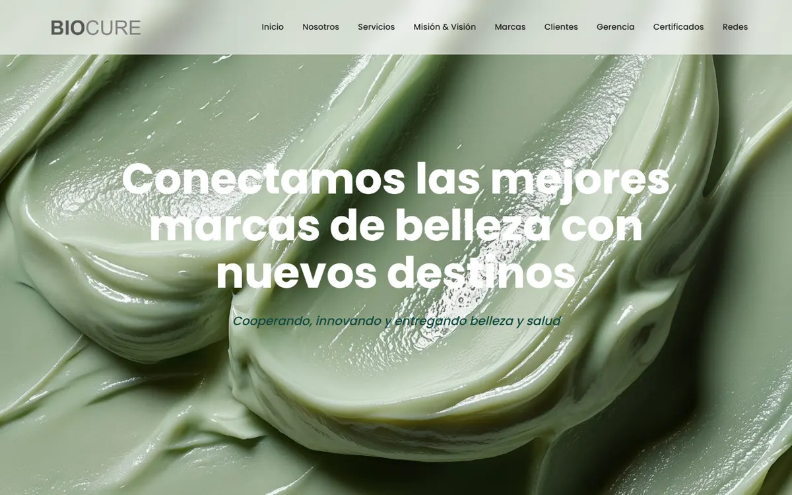
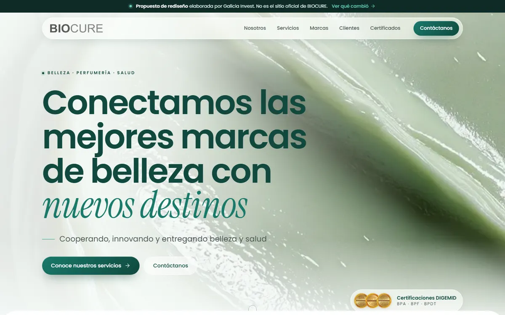
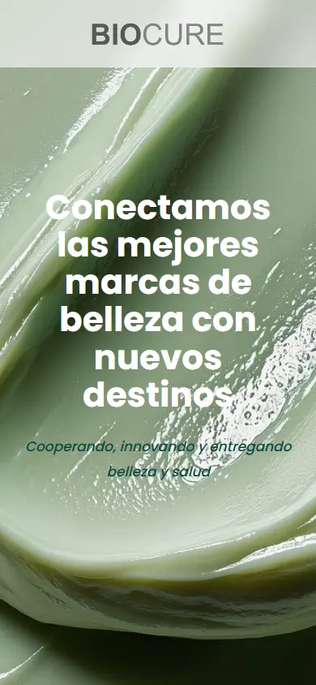
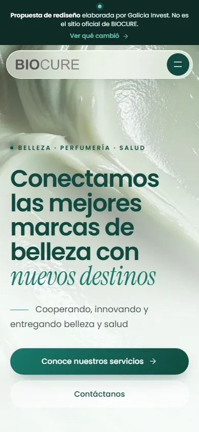
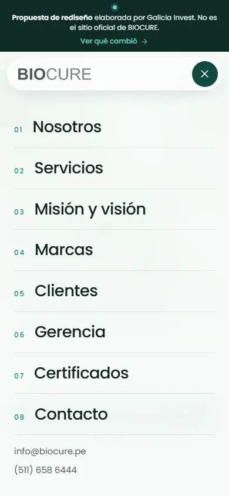
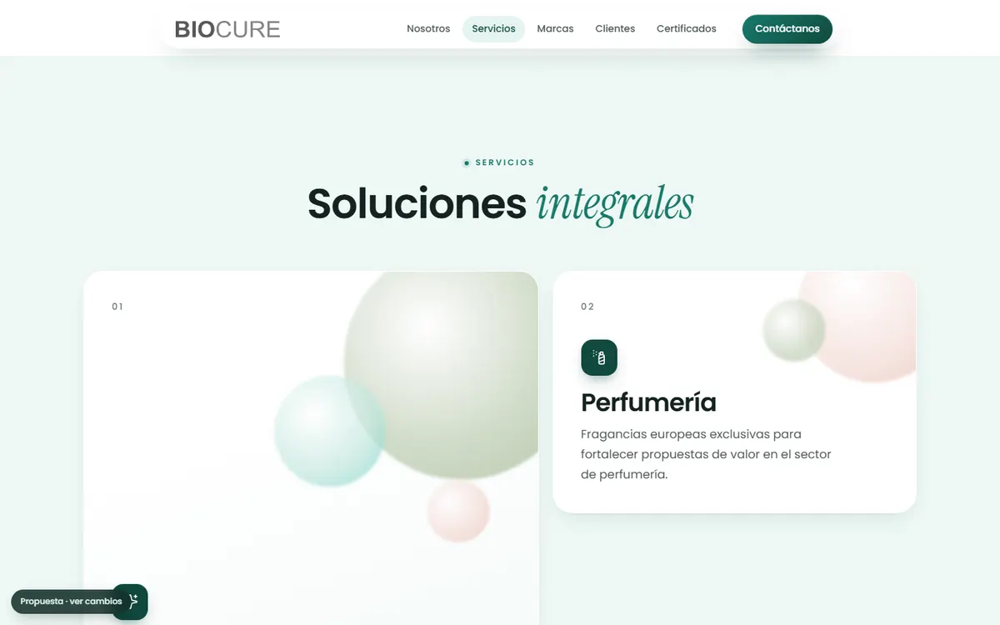
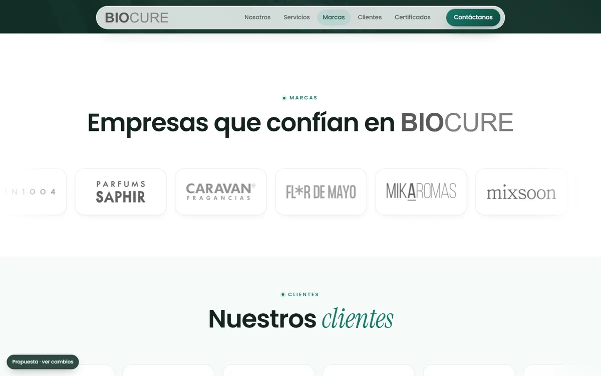
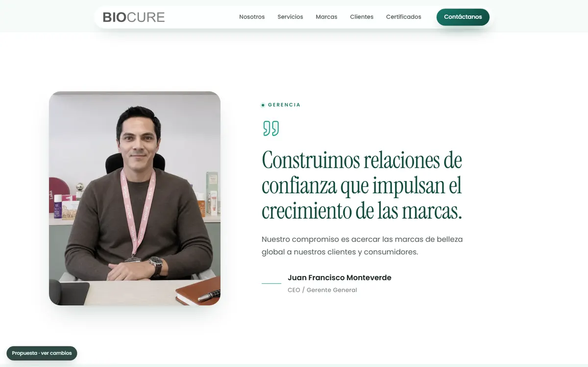

01Resumen
Rediseñamos el sitio de BIOCURE sin cambiar su identidad: el mismo logotipo, la misma paleta jade y menta, la textura de crema de la portada, la tipografía Poppins y los mismos textos. Lo que cambia es la experiencia: una portada legible, un menú que funciona en celulares, contacto a un toque y una página casi diez veces más liviana.
Logotipo gris de dos tonos, jade #1F9D8B, fondos menta, textura salvia y todo el contenido del sitio actual.
Tipografía editorial, espacios amplios, tarjetas con luz al pasar el cursor y animaciones suaves que respetan a quien prefiere menos movimiento.
Accesibilidad de 82 a 100, SEO de 91 a 100 y peso de 5,1 MB a 0,55 MB, sin perder la velocidad que el sitio ya tenía.
02Resultados medidos
| Indicador (Google Lighthouse) | Sitio actual | Propuesta | Resultado |
|---|---|---|---|
| Rendimiento en celular | 98 | 100 | +2 puntos |
| Rendimiento en computador | 100 | 100 | Se mantiene |
| Accesibilidad | 82 | 100 | +18 puntos |
| Buenas prácticas | 100 | 100 | Se mantiene |
| SEO técnico* | 91 | 100 | +9 puntos |
| Peso total de la página | 5.131 KB | 548 KB | −89 % |
| Primer contenido visible en celular | 2,0 s | 0,9 s | Más del doble de rápido |
| Elemento principal visible en celular (LCP) | 2,0 s | 1,7 s | −15 % |
| Saltos de diseño al cargar (CLS) | 0,005 | 0 | Sin saltos |
Medición del 20-11-2026 con Lighthouse 13.6, mediana de 3 corridas, perfil móvil (y escritorio donde se indica). Ambos sitios se midieron en vivo por internet: el actual en www.biocure.pe y la propuesta en esta vista previa pública. Las fallas que restaban puntos al sitio actual: contraste de color insuficiente, enlaces de redes sociales sin nombre accesible y falta de meta descripción.
* SEO: la vista previa bloquea a Google a propósito para no competir con el sitio oficial, y por eso marca 63 en esta dirección. El 100 corresponde a la misma versión sin ese bloqueo, tal como quedaría publicada en www.biocure.pe (medida en un equipo local).
03Antes y después








04Cambios sección por sección
| Sección | Antes | Ahora | Por qué |
|---|---|---|---|
| Navegación | 9 enlaces fijos; en celular se ocultaban sin alternativa | Barra flotante de vidrio que se compacta al bajar, enlace activo según la sección, botón "Contáctanos" y menú móvil a pantalla completa | En celular no había forma de saltar entre secciones |
| Portada | Título blanco sobre crema clara; sin botones | Misma textura con velo claro y suave movimiento, título en verde profundo que entra palabra por palabra, dos botones y sellos DIGEMID | Legibilidad (contraste AA) y un primer paso claro para el visitante |
| Sobre nosotros | Texto de 23 px y foto de 1,8 MB | La frase "Somos el aliado estratégico…" se ilumina con el scroll; foto con paralaje (75 KB) y cuatro capacidades con ícono | Convertir el párrafo en un mensaje que se lee de un vistazo |
| Servicios | Tres tarjetas iguales | Grilla bento: Belleza destacada, Perfumería y Farmacéuticos; luz que sigue al cursor | Jerarquía visual y una sensación más premium |
| Misión y visión | Dos tarjetas blancas a pantalla completa | Bloque en verde profundo con textura y borde de luz | Ritmo: alternar secciones claras y oscuras |
| Marcas y clientes | Carrusel que se movía con el mouse; logos sin nombre accesible | Cintas continuas en sentidos opuestos que frenan al pasar el cursor; logos en gris que toman color; cada logo con su nombre | Más elegante, accesible y sin saltos |
| Gerencia | Foto y cita en tamaño estándar | Cita en tipografía editorial grande, foto con marco jade y firma | Dar voz y cercanía a la gerencia |
| Certificados | Tres sellos sin nombre (PNG de 1,3 MB) | Cada sello con su nombre completo (BPA, BPF, BPDT · DIGEMID) y un brillo al pasar el cursor | Que el visitante entienda qué certifica cada sello |
| Contacto | Correo y teléfono como texto no clicable; sin formulario | Correo, teléfono y "cómo llegar" a un toque, más un formulario (de demostración en esta propuesta) | Convertir visitas en conversaciones comerciales |
| Pie de página | Fondo negro | Verde bosque de la marca, logotipo claro y la palabra BIOCURE en gran formato | Cerrar con identidad, no con un bloque genérico |
05Lo que no se tocó
- Logotipo BIOCURE en sus dos grises (se generó una versión clara solo para el pie oscuro).
- Paleta: jade #1F9D8B, jade oscuro #18796B, verde profundo #10493E, menta #EEF8F5 y crema #F7FBF9, todos tomados del sitio actual.
- Tipografía Poppins como base; se suma Instrument Serif solo para palabras de acento.
- Fotografías de la portada, del equipo y de la gerencia, y los logos de marcas y clientes.
- Textos: título, lema, quiénes somos, servicios, misión, visión, cita de gerencia y datos de contacto se conservan tal cual (ver ajustes propuestos abajo).
06Textos nuevos o ajustados (por validar)
Para no inventar nada, todo texto nuevo se derivó de los textos del propio sitio. Estos son los que BIOCURE debe aprobar:
- Etiqueta de la portada: "Belleza · Perfumería · Salud" (de sus líneas de servicio).
- Botones: "Conoce nuestros servicios", "Contáctanos", "Enviar mensaje".
- Opciones del formulario: "Quiero distribuir mi marca", "Soy cliente o retail", "Otro".
- Sello en la portada y descripción para Google "certificaciones DIGEMID": se basan en los tres sellos que muestra el sitio actual; BIOCURE debe confirmar que están vigentes.
- Capacidades (de la misión): Logística "Operaciones eficientes de principio a fin" · Distribución "Llegada a nuevos destinos y canales" · Marketing "Crecimiento y expansión de cada marca" · Gestión regulatoria "Cumplimiento de los requisitos sanitarios".
- Contacto: "Conversemos sobre tu marca" y "Cuéntanos qué necesitas y te responderemos a la brevedad".
- Nombres de los sellos, tomados de su propio texto: Buenas Prácticas de Almacenamiento, de Farmacovigilancia y de Distribución y Transporte.
- Corrección gramatical en la cita de gerencia: "relaciones de confianza que impulsan" (antes "impulsa").
- Título y descripción para Google, y vista previa al compartir en WhatsApp o LinkedIn.
07Cómo está construido
HTML, CSS y JavaScript sin librerías externas ni plantillas: no depende de terceros para cargar, por eso es rápido y fácil de alojar en el hosting actual. Fuentes alojadas en el mismo sitio, imágenes en formato WebP, íconos de la librería abierta Lucide y animaciones que se apagan si el visitante prefiere menos movimiento.
Cuatro patrones visuales se adaptaron de la comunidad de componentes 21st.dev, reescritos sin dependencias:
08Próximos pasos
- Revisión de la propuesta y de los textos por parte de BIOCURE.
- Conectar el formulario al correo de BIOCURE, con aviso de privacidad según la Ley 29733.
- Publicar en el dominio www.biocure.pe con la configuración de servidor recomendada.
- Otras oportunidades de mejora digital: detalladas en el reporte ejecutivo que se entrega por separado.
Vea la propuesta funcionando
Pruébela en su computador y en su celular.